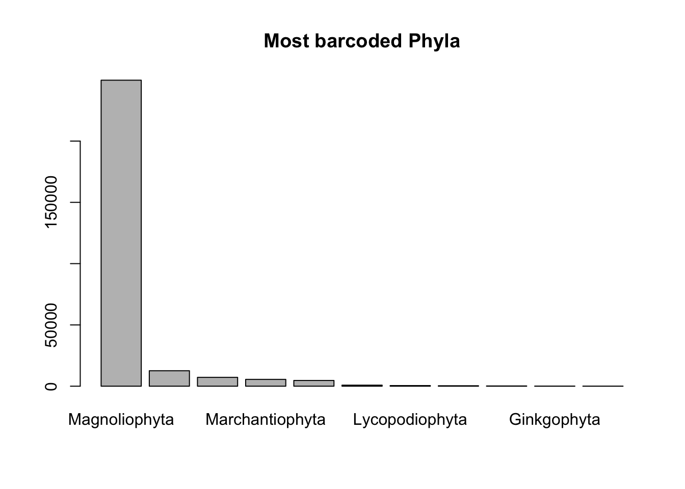
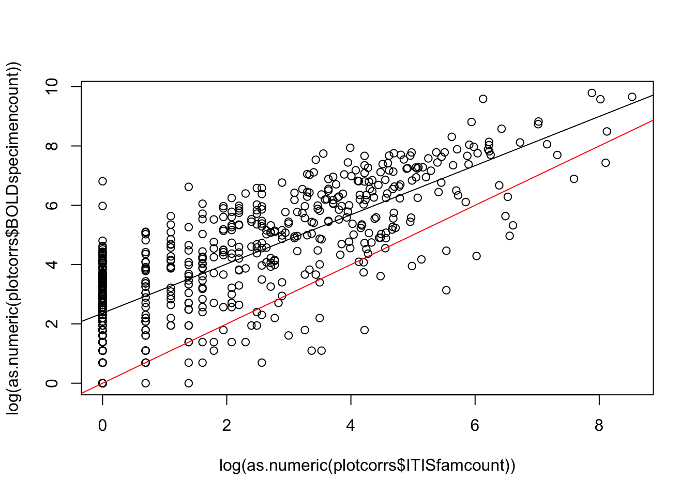
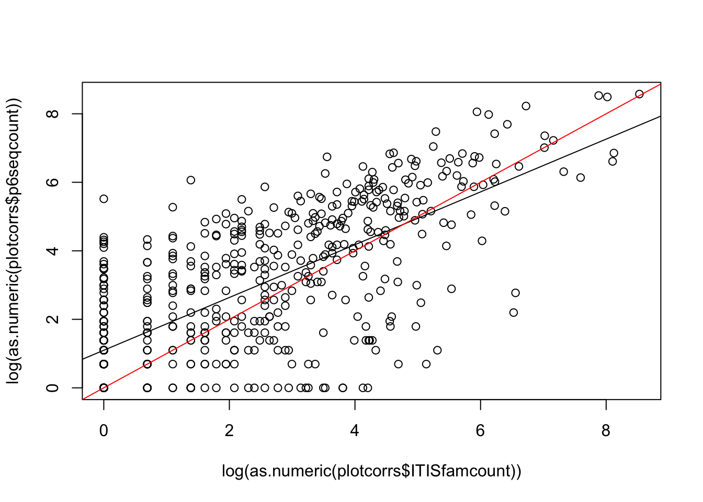
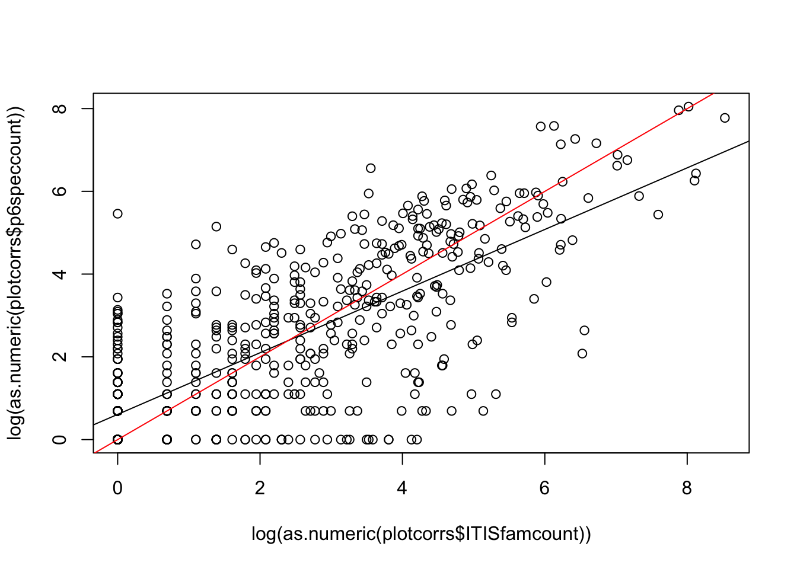

## First check for the required packages, install if needed, and load the libraries.
if (!requireNamespace("BiocManager", quietly = TRUE))
install.packages("BiocManager")
BiocManager::install("sangerseqR")
remotes::install_github("ropensci/bold")
remotes::install_github("ropensci/taxize")
if (!require("pacman")) install.packages("pacman")
pacman::p_load(maps, ggplot2, dplyr, countrycode, rgbif, data.table, raster, mapproj, sf)Correlations between plant species and DNA barcode availability
This notebook pulls in data from various sources and makes plots to compare plants species per family to availability of DNA barcodes.
SI Appendix Figure 2A-D: Read in files and summarize for panels A-B.
First we read in the data and make some quick plots.
combtab <- read.csv("../data/BoldPhyla_to_Families_combtab_v4.csv")
head(combtab, 2) X.1 X processid institution_storing phylum_taxID
1 1 1 API120-12 Sri Ramaswamy Memorial University 12
2 2 2 CANGI002-17 Museu Paraense Emilio Goeldi 12
phylum_name class_taxID class_name order_taxID order_name family_taxID
1 Magnoliophyta 41 Magnoliopsida 121216 Lamiales 148533
2 Magnoliophyta 41 Magnoliopsida 121216 Lamiales 148533
family_name subfamily_taxID subfamily_name genus_taxID genus_name
1 Acanthaceae NA 415894 Peristrophe
2 Acanthaceae 264310 Acanthoideae 148534 Ruellia
species_taxID species_name subspecies_taxID subspecies_name
1 494465 Peristrophe bicalyculata NA
2 632816 Ruellia inflata NA
collectiondate_start collectiondate_end lat lon coord_source coord_accuracy
1 NA NA NA NA NA
2 NA NA NA NA NA
elev country province_state region sector exactsite rbcL matK trnL ITS2
1 NA rbcL
2 NA Brazil Para rbcL matK ITS
multi gb_rbcL gb_matK gb_trnL gb_ITS
1 rbcL---
2 rbcL-matK--ITS # Round coordiantes to nearest 1 degree
combtab$lat <- as.numeric(as.character(combtab$lat))
combtab$lon <- as.numeric(as.character(combtab$lon))
# Phylum rank
barplot(sort(table(combtab$phylum_name), decreasing=T), main = "Most barcoded Phyla")
# Family rank
head(sort(table(combtab$family_name), decreasing=T), 10)
Fabaceae Poaceae Orchidaceae Asteraceae Rosaceae
17808 15624 14575 14410 6802
Rubiaceae Cyperaceae Lamiaceae Euphorbiaceae Ericaceae
6690 6214 5325 4863 4057 barplot(sort(table(combtab$family_name), decreasing=T), main = "Most barcoded Families")
head(table(combtab$family_name, combtab$multi), 2)
--trnL- -matK-- -matK-trnL- #NAME? rbcL--- rbcL---ITS rbcL--trnL-
Acanthaceae 2 130 10 626 192 6 25
Achariaceae 1 25 0 2 132 0 0
rbcL--trnL-ITS rbcL-matK-- rbcL-matK--ITS rbcL-matK-trnL-
Acanthaceae 1 285 70 77
Achariaceae 0 136 6 1
rbcL-matK-trnL-ITS
Acanthaceae 16
Achariaceae 1# the most barcoded plant species in the world
sort(table(combtab$species_name), decreasing=T)[1:5] # by specimens
Bryum argenteum
7495 551
Scorpidium cossonii Acanthorrhynchium papillatum
354 195
Aneura pinguis
195 Plot family abundances in ITIS and compare with barcodes: this section gives us panels A and B of the figure
infam <- read.csv("../data/allFamNames.csv")
ITISfamcount <- sort(table(infam$family), decreasing=T)
# Create a useful matrix for summarizing the BOLD counts with respect to ITIS matches
famcountmat <- matrix(0, nrow = length(ITISfamcount), ncol = 6)
colnames(famcountmat) <- c("rank", "ITISfamname", "ITISfamcount", "BOLDspecimencount", "BOLDspeccount", "trnLcount")
famcountmat <- data.frame(famcountmat)
famcountmat[,1] <- seq(1,length(ITISfamcount))
famcountmat[,2] <- names(ITISfamcount)
famcountmat[,3] <- ITISfamcount
# Make count of specimens by family
combtabfamilycount <- table(combtab$family_name)
famcountmat[,4] <- combtabfamilycount[match(famcountmat[,2], names(combtabfamilycount))]
# Make count of species by family
combtabspeciescount <- tapply(combtab$species_name, combtab$family_name, function(x) length(unique(x)))
famcountmat[,5] <- combtabspeciescount[match(famcountmat[,2], names(combtabspeciescount))]
# Make count of trnL by family
combtabtrnLcount <- tapply(combtab$trnL, combtab$family_name, function(x) length(which(x == "trnL")))
famcountmat[,6] <- combtabtrnLcount[match(famcountmat[,2], names(combtabtrnLcount))]Summarize the data:
# Number of taxa
nrow(famcountmat)
sum(famcountmat$ITISfamcount)
range(famcountmat$ITISfamcount)
quantile(famcountmat$ITISfamcount)
median(famcountmat$ITISfamcount)
# Number of family names in ITIS with barcodes
length(which(is.na(famcountmat$BOLDspecimencount) == F))
length(which(is.na(famcountmat$BOLDspecimencount) == F))/nrow(famcountmat)
# Number of family names ITIS without barcodes
length(which(is.na(famcountmat$BOLDspecimencount)))
length(which(is.na(famcountmat$BOLDspecimencount)))/nrow(famcountmat)
# Characterize the no-barcode families (i.e., "nbc" families)
nbcfams <- famcountmat[which(is.na(famcountmat$BOLDspecimencount)),]
nbcfams <- nbcfams[order(nbcfams$ITISfamcount),] # reorder by ITIS fam size
nbcfams
tail(nbcfams)
sum(nbcfams[,3])
dim(nbcfams)
sort(nbcfams$ITISfamname)
range(nbcfams$ITISfamcount)
hist(nbcfams$ITISfamcount)
median(nbcfams$ITISfamcount)
nbcfams[order(nbcfams[,3]),]
nbcfams[which(nbcfams[,3] == 1),]
dim(nbcfams[which(nbcfams[,3] == 1),])
nrow(nbcfams[which(nbcfams[,3] == 1),])/nrow(nbcfams)
nbcfams[which(nbcfams[,3]<5),]
dim(nbcfams[which(nbcfams[,3]<5),])
nrow(nbcfams[which(nbcfams[,3]<5),])/nrow(nbcfams)
nbcfams[which(nbcfams$ITISfamname == "Heliophytaceae"),]
nbcfams[which(nbcfams$ITISfamname == "Calliergonaceae"),]# Summarize families in BOLD not in ITIS
boldfamnames <- levels(combtab$family_name)
length(boldfamnames) #651
# Families in BOLD not matched by ITIS
nomatchnames <- boldfamnames[which(boldfamnames %in% famcountmat$ITISfamname == F)]
nomatchnames <- nomatchnames[which(nomatchnames != "")]
length(nomatchnames) #42
length(nomatchnames)/length(boldfamnames) #0.06451613
# Counts of specimens in families in BOLD not matched by ITIS
combtab$family_name <- factor(combtab$family_name)
sort(table(droplevels(combtab[which(combtab$family_name %in% nomatchnames),]$family_name)), decreasing=T)
sum(sort(table(droplevels(combtab[which(combtab$family_name %in% nomatchnames),]$family_name)), decreasing=T))
sum(sort(table(droplevels(combtab[which(combtab$family_name %in% nomatchnames),]$family_name)), decreasing=T))/nrow(combtab)
median(sort(table(droplevels(combtab[which(combtab$family_name %in% nomatchnames),]$family_name)), decreasing=T))
# Number of specimens not identified to family
length(which(combtab$family_name == ""))SI Appendix Figure 2A-D: Plot panels A-B
# Plot family count by specimens: Panel A
plotcorrs <- famcountmat[complete.cases(famcountmat[,3:4]),]
summary(lm(log(as.numeric(plotcorrs$BOLDspecimencount)) ~ log(as.numeric(plotcorrs$ITISfamcount))))
Call:
lm(formula = log(as.numeric(plotcorrs$BOLDspecimencount)) ~ log(as.numeric(plotcorrs$ITISfamcount)))
Residuals:
Min 1Q Median 3Q Max
-4.1891 -0.8690 0.1937 0.8946 4.4466
Coefficients:
Estimate Std. Error t value Pr(>|t|)
(Intercept) 2.36350 0.07568 31.23 <2e-16
log(as.numeric(plotcorrs$ITISfamcount)) 0.82924 0.02606 31.82 <2e-16
(Intercept) ***
log(as.numeric(plotcorrs$ITISfamcount)) ***
---
Signif. codes: 0 '***' 0.001 '**' 0.01 '*' 0.05 '.' 0.1 ' ' 1
Residual standard error: 1.301 on 607 degrees of freedom
Multiple R-squared: 0.6251, Adjusted R-squared: 0.6245
F-statistic: 1012 on 1 and 607 DF, p-value: < 2.2e-16plotcorrs_ggplot_BOLDspecimen_ITISfamily <- ggplot(
plotcorrs, aes(x=log(ITISfamcount), y=log(BOLDspecimencount))) +
geom_point(pch = 1) +
theme_classic() +
xlab("Log of ITIS family count") +
ylab("Log of BOLD specimen count") +
geom_abline(intercept = 0, slope = 1, color = "black", linewidth = 1, linetype = "dashed") +
geom_smooth(method = "lm", se=FALSE, linewidth=1, color = "darkgreen") +
scale_y_continuous(breaks = seq(0,9, by = 3)) +
scale_x_continuous(breaks = seq(0,9, by = 3))
plotcorrs_ggplot_BOLDspecimen_ITISfamily`geom_smooth()` using formula = 'y ~ x'
#ggsave("plotcorrs_ggplot_BOLDspecimen_ITISfamily.pdf", plotcorrs_ggplot_BOLDspecimen_ITISfamily, width = 10, height = 8, units = "cm")
# Summary stats for panel A
plotcorrs_summary <- plotcorrs %>% dplyr::summarize(sumspecimens = sum(BOLDspecimencount))
plotcorrs_summary sumspecimens
1 277770# Plot family count by species: PANEL B
plotcorrs_ggplot_BOLDspecies_ITISfamily <- ggplot(
plotcorrs, aes(x=log(ITISfamcount), y=log(BOLDspeccount))) +
geom_point(pch = 1) +
theme_classic() +
xlab("Log of ITIS family count") +
ylab("Log of BOLD species count") +
geom_abline(intercept = 0, slope = 1, color = "black", linewidth = 1, linetype = "dashed") +
geom_smooth(method = "lm", se=FALSE, linewidth=1, color = "darkgreen") +
scale_y_continuous(breaks = seq(0,9, by = 3)) + scale_x_continuous(breaks = seq(0,9, by = 3))
plotcorrs_ggplot_BOLDspecies_ITISfamily `geom_smooth()` using formula = 'y ~ x'
#ggsave("plotcorrs_ggplot_BOLDspecies_ITISfamily.pdf", plotcorrs_ggplot_BOLDspecies_ITISfamily, width = 10, height = 8, units = "cm")
#summary stats for panel B
plotcorrs_summary <- plotcorrs %>% summarize(sumspecies = sum(BOLDspeccount))
plotcorrs_summary sumspecies
1 101674SI Appendix Figure 2A-D: Read in files and summarize for panels C-D.
Now read in the data from downloading all trnL P6 data from the European Nucleotide Archive at EMBL-EBI. More details for the download can be found in the “Building the datasets” section of the Methods in the publication. This data corresponds to dataset S3 in the Supplement.
emblp6 <- read.csv("../data/glob_ref_lib_edit_P6.csv")
nrow(emblp6)[1] 86192# Build the same kind of matrix as above
famcountmatp6 <- matrix(0, nrow = length(ITISfamcount), ncol = 5)
colnames(famcountmatp6) <- c("rank", "ITISfamname", "ITISfamcount", "p6seqcount", "p6speccount")
famcountmatp6 <- data.frame(famcountmatp6)
famcountmatp6[,1] <- seq(1,length(ITISfamcount))
famcountmatp6[,2] <- names(ITISfamcount)
famcountmatp6[,3] <- ITISfamcount
# Make count of specimens by family
emblp6count <- table(emblp6$family_name)
famcountmatp6[,4] <- emblp6count[match(famcountmatp6[,2], names(emblp6count))]
length(emblp6count)[1] 633sum(emblp6count)[1] 86192# Make count of species by family
emblp6speciescount <- tapply(emblp6$species_name, emblp6$family_name, function(x) length(unique(x)))
famcountmatp6[,5] <- emblp6speciescount[match(famcountmatp6[,2], names(emblp6speciescount))]Summarize the data:
# Number of taxa
nrow(famcountmatp6)
sum(famcountmatp6$ITISfamcount)
range(famcountmatp6$ITISfamcount)
quantile(famcountmatp6$ITISfamcount)
median(famcountmatp6$ITISfamcount)
# Number of family names in ITIS with barcodes
length(which(is.na(famcountmatp6$p6seqcount) == F))
length(which(is.na(famcountmatp6$p6seqcount) == F))/nrow(famcountmatp6)
# Number of family names ITIS without barcodes
length(which(is.na(famcountmatp6$p6seqcount)))
length(which(is.na(famcountmatp6$p6seqcount)))/nrow(famcountmatp6)
# Characterize the no-barcode families
nbcfamsp6 <- famcountmatp6[which(is.na(famcountmatp6$p6seqcount)),]
nbcfamsp6 <- nbcfamsp6[order(nbcfamsp6$ITISfamcount),] # reorder by ITIS fam size
nbcfamsp6
tail(nbcfamsp6)
sum(nbcfamsp6[,3])
dim(nbcfamsp6)
sort(nbcfamsp6 $ITISfamname)
range(nbcfamsp6 $ITISfamcount)
hist(nbcfamsp6 $ITISfamcount)
median(nbcfamsp6 $ITISfamcount)
nbcfamsp6[order(nbcfamsp6[,3]),]
nbcfamsp6[which(nbcfamsp6[,3]==1),]
dim(nbcfamsp6[which(nbcfamsp6[,3]==1),])
nrow(nbcfamsp6[which(nbcfamsp6[,3]==1),])/nrow(nbcfamsp6)
nbcfamsp6[which(nbcfamsp6[,3]<5),]
dim(nbcfamsp6[which(nbcfamsp6[,3]<5),])
nrow(nbcfamsp6[which(nbcfamsp6[,3]<5),])/nrow(nbcfamsp6)
nbcfamsp6[which(nbcfamsp6 $ITISfamname=="Heliophytaceae"),]
nbcfamsp6[which(nbcfamsp6 $ITISfamname=="Calliergonaceae"),]# Summarize families in embl not in ITIS
p6famnames <- levels(emblp6$family_name)
length(p6famnames)
# Families in embl not matched by ITIS
nomatchnamesp6 <- p6famnames[which(p6famnames %in% famcountmatp6$ITISfamname == F)]
nomatchnamesp6 <- nomatchnamesp6[which(nomatchnamesp6 != "")]
length(nomatchnamesp6)
length(nomatchnamesp6)/length(p6famnames)
# Counts of specimens in families in embl not matched by ITIS
emblp6$family_name <- factor(emblp6$family_name)
sort(table(droplevels(emblp6[which(emblp6 $family_name %in% nomatchnamesp6),]$family_name)), decreasing=T)
sum(sort(table(droplevels(emblp6[which(emblp6 $family_name %in% nomatchnamesp6),]$family_name)), decreasing=T))
sum(sort(table(droplevels(emblp6[which(emblp6 $family_name %in% nomatchnamesp6),]$family_name)), decreasing=T))/nrow(combtab)
median(sort(table(droplevels(combtab[which(combtab$family_name %in% nomatchnamesp6),]$family_name)), decreasing=T))
# Number of specimens not identified to family
length(which(emblp6$family_name == ""))SI Appendix Figure 2A-D: Plot panels C-D
# Plot correlations - family count by specimens: Panel C
plotcorrs <- famcountmatp6[complete.cases(famcountmatp6[,3:4]),]
plotcorrs_ggplot_family_sequences <- ggplot(
plotcorrs, aes(x=log(ITISfamcount), y=log(p6seqcount))) +
geom_point(pch = 1) +
theme_classic() +
xlab("Log of ITIS family count") +
ylab("Log of trnL-P6 sequence count") +
geom_abline(intercept = 0, slope = 1, color = "black", linewidth = 1, linetype = "dashed") +
geom_smooth(method = "lm", se=FALSE, linewidth=1, color = "darkgreen") +
scale_y_continuous(breaks = seq(0,9, by = 3)) +
scale_x_continuous(breaks = seq(0,9, by = 3))
plotcorrs_ggplot_family_sequences`geom_smooth()` using formula = 'y ~ x'
#ggsave("plotcorrs_ggplot_family_sequences.pdf", plotcorrs_ggplot_family_sequences, width = 10, height = 8, units = "cm")
# Summarize for panel C
plotcorrs_summary <- plotcorrs %>% dplyr::summarize(sumP6sequences = sum(p6seqcount))
plotcorrs_summary sumP6sequences
1 84837# Family count by species: Panel D
plotcorrs_ggplot_family_sequencespecies <- ggplot(
plotcorrs, aes(x=log(ITISfamcount), y=log(p6speccount))) +
geom_point(pch = 1) +
theme_classic() +
xlab("Log of ITIS family count") +
ylab("Log of trnL-P6 species count") +
geom_abline(intercept = 0, slope = 1, color = "black", linewidth = 1, linetype = "dashed") +
geom_smooth(method = "lm", se=FALSE, linewidth=1, color = "darkgreen") +
scale_y_continuous(breaks = seq(0,9, by = 3)) +
scale_x_continuous(breaks = seq(0,9, by = 3))
plotcorrs_ggplot_family_sequencespecies `geom_smooth()` using formula = 'y ~ x'
#ggsave("plotcorrs_ggplot_family_sequencespecies.pdf", plotcorrs_ggplot_family_sequencespecies, width = 10, height = 8, units = "cm")
# Summarize for panel D
plotcorrs_summary <- plotcorrs %>% summarize(sump6speccount = sum(p6speccount))
plotcorrs_summary sump6speccount
1 45659